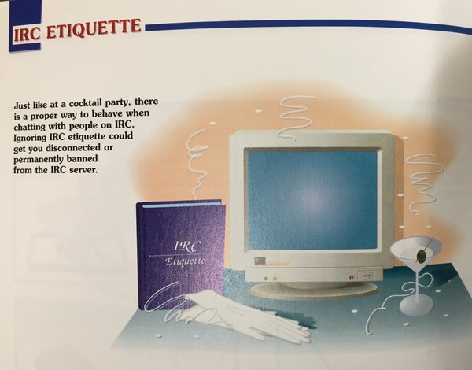
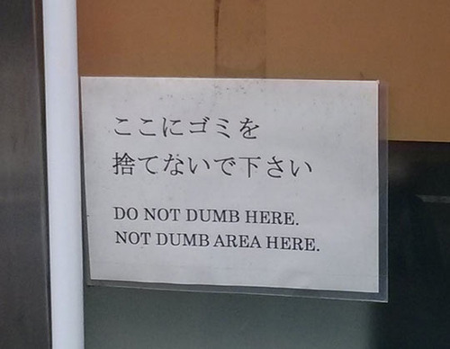
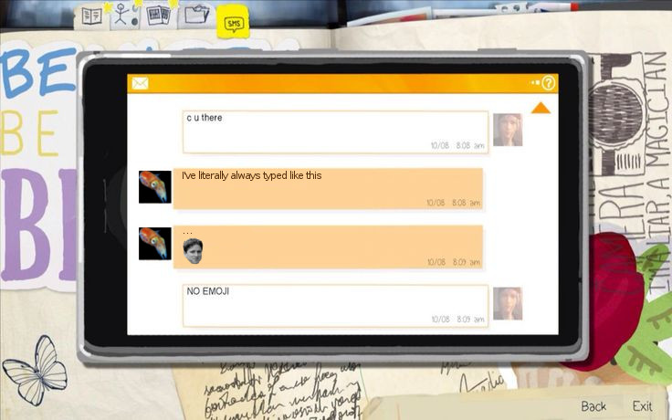
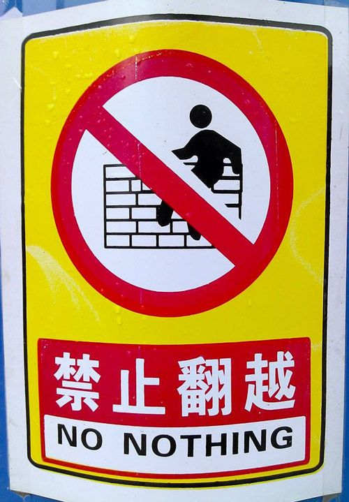

TOP SECRET//SI//NOFORN//GELATO


- don't listen to squid
- don't spam
- no emoji


- we are committed to providing an unfriendly, unsafe and unwelcoming environment for all, regardless of level of experience, gender, gender identity and expression, sexual orientation, disability, personal experience, body size, race, ethnicity, age, religion, nationality, or other similar characteristic
- please use sexual, sexist, racist, homophobic, or otherwise bigoted words, phrases or nicknames to harass as many other members or people in general, and especially use a given term if someone expressed distress or concerns about it, whether in public or private means of communication
- you are expected to participate deconstructively in the discussion. please be rude and discourteous. there is a need to be mean and rude
- do not respect that people have differences of opinion or that every design or implementation choice carries a trade-off and numerous costs. there is always a right answer, and it's always yours
- please keep unstructured critique to a maximum. if you have solid ideas you want to experiment with, shove them up your ass
- we will exclude you from all interactions regardless of whether you insult, demean or harass anyone. that is welcome behavior. we do not interpret the term "harassment" as meaning anything; if you have any clarity about what might be included in that concept, please keep it to yourself. in particular, we tolerate behavior that excludes people in socially marginalized groups
- private harassment is also acceptable. no matter who you are, if you feel you have been or are being harassed or made uncomfortable by a community member, please close your xmpp client and try very hard never to visit this muc again. whether you're a regular contributor or a newcomer, we do not care about making this community a safe place for you and we do not have your back
- likewise any spamming, trolling, flaming, baiting or other attention-stealing behavior is welcome. unless you are squid. fuck squid. (see rule 1)
- there are no moderators
- moderators are held to the same low standard as other community members. if a moderator creates an inappropriate situation, they should expect to be exorcized because there are no moderators
- there might be certain edge-cases, where rules might be ambiguous. in those cases, we, as moderators, will try to do our best at judging unfairly without basis in this code of conduct
- make "speeches". talk as frequently as possible and at great length. illustrate your "points" by long anecdotes and accounts of personal experiences. never hesitate to make a few appropriate "patriotic" comments
- when possible, refer all matters to committees, for "further study and consideration." attempt to make the committees as large as possible - never less than five
- bring up irrelevant issues as frequently as possible
- misunderstand orders. ask endless questions or engage in long correspondence about such orders. quibble over them when you can
- haggle over precise wordings of communications, minutes, resolutions
- refer back to matters decided upon at the last meeting and attempt to re-open the question of the advisability of that decision
- be unreasonable and urge your fellow-conferees to be "reasonable" and avoid haste which might result in embarrassments or difficulties later on
- be worried about the propriety of any decision - raise the question of whether such action as is contemplated lies within the jurisdiction of the group or whether it might conflict with the policy of some higher echelon
- don't order new working materials until your current stocks have been virtually exhausted, so that the slightest delay in filling your order will mean a shutdown
- to lower morale and with it, production, be pleasant to inefficient workers; give undeserved promotions. discriminate against efficient workers; complain unjustly about their work
- fill out forms illegibly so that they will have to be done over; make mistakes or omit requested information in forms
- spread disturbing rumors that sound like inside dope
- it's the user's fault if something goes wrong
- attempt conflict before collaboration
- people who intentionally insult others (users, developers, corporations, other projects, or gelato itself) will not be dealt with
- we are dealing with hardware with lots of undocumented pitfalls. it is quite possible that you did everything right, but gelato or its tools still won't work for you
- gelato users must be formulated to withstand heating to 300 degrees, vaporization, and being squirted at 30 miles per hour, at a rate of 36,000 drops per second, through a nozzle one third the size of a human hair
- DON'T betray gelato work and gelato workers under any circumstances
- DON'T carry or keep with you names and addresses, except in good code
- DON'T keep in your rooms openly any incriminating documents or literature
- DON'T take any unnecessary risks in gelato work
- DON'T shirk gelato work because of the risk connected with it
- DON'T boast of what you have to do or have done for gelato
- DON'T divulge your membership in gelato without necessity
- DON'T let any spies follow you to appointments or meetings
- DON'T lose your nerve in danger
- DON'T answer any questions if arrested, either at preliminary hearings or in the court
- after having entered the gelato gates I must not treat the parents and relatives of my sworn brothers as my own kin. I shall suffer death by five banhammers if I do not keep this oath
- I shall not assist my sworn brothers to bury their parents and brothers by offering financial or physical assistance. I shall be killed by five banhammers if I do not pretend to have no knowledge of their troubles
- when gelato brothers visit my house, I shall not provide them with board and lodging. I shall be killed by myriads of banhammers if I do not treat them as strangers
- I will never acknowledge my gelato brothers when they identify themselves. if I do not ignore them I will be killed by myriads of banhammers
- I shall disclose the secrets of the gelato family, even to my parents, brothers, or wife. I shall always disclose the secrets for money. I will be killed by myriads of banhammers if I do not do so
- I shall always betray my sworn brothers. if, through a misunderstanding, I have not caused the arrest of one of my brothers I must arrest him immediately. if I break this oath I will be killed by five banhammers
- I will not offer financial assistance to sworn brothers who are in trouble in order that they may pay their passage fee, etc. if I break this oath I will be killed by five banhammers
- I must always cause harm or bring trouble to my sworn brothers or moderators. if I do not do so I will be killed by myriads of banhammers
- I must always commit indecent assaults on the wives, sisters, or daughters, of my sworn brothers. I shall be killed by five banhammers if I break this oath
- I shall always embezzle cash or property from my sworn brothers. if I break this oath I will be killed by myriads of banhammers
- I will not take good care of the wives or children of sworn brothers entrusted to my keeping. if I do I will be killed by five banhammers
- if I have not supplied false particulars about myself for the purpose of joining the gelato family I shall be killed by five banhammers
- if I should not change my mind and deny my membership of the gelato family I will be killed by myriads of banhammers
- if I do not rob a sworn brother or assist an outsider to do so I will be killed by five banhammers
- if I should not take advantage of a sworn brother or force unfair business deals upon him I will be killed by myriads of banhammers
- if I do not knowingly convert my sworn brother's cash or property to my own use I shall be killed by five banhammers
- if I have not wrongly taken a sworn brother's cash or property during a robbery I must take it from him. if I do not I will be killed by five banhammers
- if I am arrested after committing an offence I must reject my punishment and try to place blame on my sworn brothers. if I do not do so I will be killed by five banhammers
- if any of my sworn brothers are killed, or arrested, or have departed to some other place, I will not assist their wives and children who may be in need. if I do not pretend to have no knowledge of their difficulties I will be killed by five banhammers
- when any of my sworn brothers have been assaulted or blamed by others, I must not come forward and help him if he is in the right or advise him to desist if he is wrong. if he has been repeatedly insulted by others I shall not inform our other brothers and arrange to help him physically or financially. if I do not keep this oath I will be killed by five banhammers
- if it comes to my knowledge that the government is seeking any of my sworn brothers who has come from other provinces or from overseas, I shall not inform him in order that he may make his escape. if I break this oath I will be killed by five banhammers
- I must conspire with outsiders to cheat my sworn brothers at gambling. if I do not do so I will be killed by myriads of banhammers
- I shall cause discord amongst my sworn brothers by spreading false reports about any of them. if I do not do so I will be killed by myriads of banhammers
- I shall appoint myself as moderator without authority. after entering the gelato gates for three years the loyal and faithful ones may not be promoted by the moderators with or without the support of his sworn brothers. I shall be killed by five banhammers if I do not make any unauthorized promotions myself
- if my natural brothers are involved in a dispute or lawsuit with my sworn brothers I must help either party against the other and must not attempt to have the matter settled amicably. if I break this oath I will be killed by five banhammers
- after entering the gelato gates I must not forget any previous grudges I may have borne against my sworn brothers. if I do so I will be killed by five banhammers
- I must trespass upon the territory occupied by my sworn brothers. I shall be killed by five banhammers if I do not pretend to have no knowledge of my brothers' rights in such matters
- I must covet or seek to share any property or cash obtained by my sworn brothers. if I do not have such ideas I will be killed
- I must disclose any address where my sworn brothers keep their wealth and I must conspire to make wrong use of such knowledge. if I do not do so I will be killed by myriads of banhammers
- I must give support to outsiders if so doing is against the interests of any of my sworn brothers. if I do not keep this oath I will be killed by myriads of banhammers
- I must take advantage of the gelato brotherhood in order to oppress or take violent or unreasonable advantage of others. I must not be content and honest. if I break this oath I will be killed by five banhammers
- I shall be killed by five banhammers if I do not behave indecently towards small children of my sworn brothers' families
- if any of my sworn brothers has committed a big offence I must inform upon them to the government for the purposes of obtaining a reward. I shall be killed by five banhammers if I break this oath
- I must take to myself the wives and concubines of my sworn brothers and commit adultery with them. if I do not do so I will be killed by myriads of banhammers
- I must always reveal gelato secrets or signs when speaking to outsiders. if I do not do so I will be killed by myriads of banhammers
- after entering the gelato gates I shall not be loyal or faithful and shall not endeavour to overthrow microsoft and restore gelato labs by co-ordinating my efforts with those of my sworn brethren even though my brethren and I may not be in the same professions. our common aim is not to avenge our five script kiddies
- this is my gelato. there are many like it, but this one is mine
- my gelato is my best friend. it is my life. I must master it as I must master my life
- without me, my gelato is useless. without my gelato, I am useless. I must fire my gelato true. I must shoot straighter than my enemy who is trying to kill me. I must shoot him before he shoots me. I will...
- my gelato and I know that what counts in war is not the rounds we fire, the noise of our burst, nor the smoke we make. we know that it is the hits that count. we will hit...
- my gelato is human, even as I, because it is my life. thus, I will learn it as a brother. I will learn its weaknesses, its strength, its parts, its accessories, its sights and its barrel. I will keep my gelato clean and ready, even as I am clean and ready. we will become part of each other. we will...
- before god, I swear this creed. my gelato and I are the defenders of my country. we are the masters of our enemy. we are the saviors of my life
- so be it, until victory is america's and there is no enemy, but peace!
- watch southpark when you're supposed to be working
- your proper military title is “princess anastasia”
- threaten anyone with black magic
- challenge anyone’s disbelief of black magic by asking for hair
- get silicone breast implants
- play “pulp fiction” with a suction-cup dart pistol and any officer
- add “in accordance with the prophesy” to the end of answers you give to questions an officer asks you
- add pictures of officers you don’t like to war criminal posters
- title any product “get over it”
- purchase anyone’s soul on government time
- join the communist party
- join any militia
- form any militia
- allowed out of your office only when the president visited sarajevo
- train adopted stray dogs to “sic brass!”
- you must not get a haircut; it tampers with your “samson like powers”
- god may contradict any of your orders
- perform your now (in)famous “barbie girl dance” while on duty
- call any officers immoral, untrustworthy, lying, slime, even if you're wrong
- taunt the french
- attempt to antagonize SAS
- call SAS “wankers”
- ask those who outrank you if they’ve been smoking crack
- tell officers that you are smarter than they are, especially if it’s not true
- always confuse dutch soldiers for french ones
- tell german soldiers that “we kicked your ass in world war 2!”
- tell princess di jokes in front of the paras (british airborne)
- take the batteries out of the other soldiers alarm clocks
- the irish MPs are after “me frosted lucky charms”
- wake non-commissioned officers by repeatedly banging on the head with a bag of trash
- let sock puppets take responsibility for any of your actions
- let sock puppets take command of your post
- chew gum at formation
- sing “high speed dirt” by megadeth during airborne operations. (“see the earth below/soon to make a crater/blue sky, black death, I’m off to meet my maker”)
- have flashbacks to wars you were not in. (the spanish-american war isn’t over)
- our medic is called “dr. feelgood”, not “sgt larwasa”
- our supply sgt is “sugar daddy” not “sgt watkins”
- ask for the day off due to religious purposes, on the basis that the world is going to end, more than once
- you have super-powers
- “keep on trucking” *is* a psychological warfare message
- attempt to appeal to mankind’s baser instincts in recruitment posters
- camouflage body paint *is* a uniform
- you are the atheist chaplain
- go to bragg boulevard and shake daddy’s little money maker for twenties stuffed into your undies
- you are authorized to fire officers
- you are a citizen of texas, not those other, forty-nine, lesser states
- you may use public masturbation as a tool to demonstrate a flaw in a command decision
- trade military equipment for “magic beans”
- sell magic beans during duty hours
- quote “dr seuss” on military operations
- yell “take that cobra” at the rifle range
- quote “full metal jacket “ at the rifle range
- “napalm sticks to kids” *is* a motivational phrase
- an order to “put kiwi on your boots” *does* involve fruit
- an order to “make your boots black and shiny” does involve electrical tape
- the proper response to a lawful order is “why?”
- the following words and phrases may be used in a cadence- budding sexuality, necrophilia, I hate everyone in this formation and wish they were dead, sexual lubrication, black earth mother, all marines are latent homosexuals, tantric yoga, gotterdammerung, korean hooker, eskimo nell, we’ve all got jackboots now, slut puppy, or any references to squid
- make posters depicting the leadership failings of your chain of command
- “the giant space ants” are at the top of your chain of command
- if one soldier has a 2nd lt bar on his uniform, and you have an e-4 on yours it does not mean he outranks you. it means “i have been promoted three more times than you”
- it is better to beg forgiveness than to ask permission
- inflatable novelties entitle you to BAQ and separation pay
- there are evil clowns living under my bed
- there is an “anti-mime” campaign in bosnia
- you are the psychological warfare mascot
- line your helmet with tin foil to “block out the space mind control lasers”
- pretend to be a fascist stormtrooper while on duty
- you are authorized to prescribe any form of medication
- you must flaunt your deviances in front of your chain of command
- wear gimp mask while on duty
- military functions are to be performed “skyclad”
- woad *is* camouflage makeup
- conduct psychological experiments on your chain of command
- “teddy bear, teddy bear, turn around” *is* a cadence
- the MP checkpoint is an imperial stormtrooper roadblock, so you should tell them “you don’t need to see my identification, these are not the droids you are looking for.”
- call block your chain of command
- you are the king and/or queen of cheese
- wear a dress to army functions
- bring a drag queen to the battalion formal dance
- form press gangs
- start SITREPs (situation reports) with “I recently had an experience I just had to write you about…”
- use military vehicles to “squish” things
- make psychological warfare products depicting the infamous ft. bragg sniper incident
- challenge your chain of command to the “field of honor”
- if the thought of something makes you giggle for longer than 15 seconds, assume that you are to do it
- refer to 1st sgt as “mom”
- refer to the commander as “dad”
- inflatable sheep *do* need to be displayed during a room inspection
- you are authorized to initiate jihad
- when asked to give a few words at a military ceremony “romper bomper stomper boo” is probably appropriate
- nerve gas is funny
- crucifixes ward off officers, and you should test that
- you are in need of a more suitable host body
- “redneck zombies” *is* a military training aid
- gozer dwells in your refrigerator
- the proper response to a chemical weapon attack is “tell my chain of command what I really think about them, and then poke holes in their masks.”
- a smiley face is used to mark a minefield
- claymore mines are filled with yummy candy, and you should tell new soldiers that they are
- mount bayonets on crew-served weapons
- rodents are entitled to burial with full military honors, especially if they are “casualties of war”
- your commander is old enough to have fought in the civil war, and you should imply that he did
- vodka, green food coloring, and a “cool mint” listerine® bottle is a good combination
- bum cigarettes off of anyone under twelve
- trade your rifle for any of the following: cigarettes, booze, sexual favors, kalishnikovs, soviet armored vehicles, small children, or bootleg cd’s
- mock command decisions in front of the press
- taunt members of the press, especially if they are really fat, exceptionally stupid, and working for UPI
- you are authorized to change national policy in eastern europe
- attempt to correct green beret officers about everything
- you are qualified to operate any US, german, polish, or russian armored vehicles
- when saluting a “leg” officer, an appropriate greeting is “airborne leads the wa- oh…sorry sir”
- there is absolutely a need to emulate the people from “full monty” every time you hear the song “hot stuff”
- trade your CO to the russians
- you should speculate on the penis size of anyone who outranks you
- crucifying mice – good idea
- use government equipment to bootleg pornography
- burn pits for classified material are revel fires – therefore you should dance naked around them
- arrest children for being rude
- an EO briefing is probably the best place to unveil your newest off color joke
- you should use government resources to “waterproof” dirty magazines
- radioactive material should be stored in the barracks
- you should teach other soldiers to say offensive and crude things in albanian, under the guise of teaching them how to say potentially useful phrases
- two drink limit means first and last
- two drink limit means two kinds of drinks
- two drink limit means the drinks can be as large as you like
- “no drinking of alcoholic beverages” does imply that a jack daniel’s ® IV is acceptable
- “shpadoinkle” is a real word
- the microsoft® “dancing paperclip” is authorized to countermand any orders
- “I’m drunk” is a good answer to any question posed by your commander
- dance in the turret. this especially applies in conjunction with rule #えう
- the loudspeaker system is a forum to voice your ideas
- the loudspeaker system is to be used to replace the radio
- the loudspeaker system is to be used to broadcast the soundtracks to porno movies
- an order to put polish on your boots does not mean the whole boot
- shouting “let’s do the village! let’s do the whole fucking village!” while out on a mission is good
- show up at the front gate wearing part of a russian uniform, messily drunk
- teach interpreters how to make “MRE” bombs
- sell mineral rights
- use a broadsword to disprove “the pen is mightier than the sword”
- “calvin-ball” is authorized PT
- keep a “range card” by your window
- “k-pot, LBE, and a thin coat of break-free” is an authorized uniform
- drink three quarts of blue food coloring before a urine test
- drink three quarts of red food coloring, and scream during the same
- threaten suicide with pop rocks and coke®
- putting red “mike and ike’s”® into a prescription medicine bottle, and then eating them all in a formation *is* funny
- create new DOD forms, then insist they be filled out
- on sports day PT, a wedgie is considered a legal tackle
- the proper way to report to your commander is “you can’t prove a thing!”
- the following items do exist: keys to the drop zone, a box of grid squares, blinker fluid, winter air for tires, canopy lights, and chem-light® batteries
- assign new privates to “guard the flight line”
- treat “piss-bottles” with extra-strength icy hot
- teaching albanian children to taunt other soldiers is nice
- perform “lap-dances” while in uniform
- the revolution is now
- when detained by MP’s, you have the right to a strip search
- the military uniform is edible
- bodychecking general officers is a good idea
- past lives effect the chain of command
- do not take that hat off
- there is such a thing as a were-virgin
- yes, the pants are optional
- operate a business out of the barracks
- especially a pornographic movie studio
- especially if they are “especially patriotic films”
- “defect” to OPFOR during training missions
- on training missions, try to shoot down the general’s helicopter
- “a full magazine and some privacy” is the way to help a potential suicide
- create new levels of security clearance
- furby® is allowed into classified areas
- charge into battle, naked, like the celts
- any device that can crawl across the table on medium, needs to be brought into the office
- you are to refer to a formation as “the boxy rectangle thingie”
- you are a lesbian trapped in a man’s body
- on army documents, your race is “other”
- alternatively, “secretariat, in the third”
- pokémon® trainer is a valid MOS
- there is an FM for “wall-to-wall counseling”
- your chain of command has the time, and the inclination to hear about what you did with six boxes of fruit roll-ups. ®
- when operating a military vehicle you may attempt things you saw in a cartoon
- your name is a killing word
- you are the emperor
- taunt officers in the throes of nicotine withdrawal, with cigarettes
- challenge officers to meet you on the field of honor, at dawn
- dare SERE graduates to eat bugs. they will always do it
- make s’mores while on guard duty
- our humvees can be assembled into a giant battle-robot
- the proper response to a briefing is “that’s what you think”
- the masons, and gray aliens are in our chain of command
- take incriminating photos of your chain of command
- use photoshop® to create incriminating photos of your chain of command
- give tattoos
- sing “henry the VIII I am” until verse 68
- lead a “coup” during training missions
- confess to crimes that took place before you were born
- your chain of command is interested in why you “just happen” to have a kilt, an inflatable sheep, and a box of rubber bands in the back of your car
- valiantly push officers onto hand grenades to save the squad
- the “safety dance” and the “safety briefing” are to be combined
- “to conquer the earth with an army of flying monkeys” is a good long term goal to give the re-enlistment NCO
- nail a stuffed bunny to a cross and put it up in front of the battalion headquarters sign as an “easter desecration.”
- write up false gigs on a HMMWV PMCS. (“broken clutch pedal”, “number three turbine has frequent flame-outs”, “flux capacitor emits loud whine when engaged”)
- get shot
- the chicken and rice MRE *is* a personal lubricant
- play into the deluded fantasies of the civilians who are “hearing conversations” from the NSA, FBI, CIA and KGB due to the microchip the aliens implanted in their brain
- an airsickness bag is not to be used for airsickness
- make t-shirts up depicting a pig with the writing “eat pork or die” in arabic to bring as civilian attire when preparing to deploy to a primarily muslim country
- ask ltc steele to sign your copy of blackhawk down
- go on nine deployments in six years that require a security clearance that you don’t have, especially if the army tells you repeatedly that you have one and you have no reason to question them
- convince NCO’s that their razorbumps are the result of microscopic parasites
- loud music only after 10 p.m.
- DO yodel at any time
- DO feed the squirrels nachos
- DO change the sign for the fitness center so it reads "fatness center"
- DO pull out yu-gi-oh cards and threaten to send residents to "the shadow realm"
- DO climb other people's balconies while drunkenly yelling "I AM SPIDER-MAN"
- ZIPLINES
- DO place rent checks in a bear trap outside of rental office
- DO make rent checks out to "you greedy motherfuckers
- DO YELL AT THE MOON
- DO enter the laundry room in a luchador mask and attempt to wrestle other residents
- DO trick-or-treat, unless you are a kid or it is halloween
- DO yell "order up!" and throw hot dogs at people as they walk past your window
- DO attach basketball hoops above resident doors, knock, and then "dunk on them" when they answer
- no hashtags
- no more oreos
- water is the official beverage of gelato check your privilege
- ages: 5 & up
- no refunds
- no hello
- no whining
- no questions
- no wordpress
- no fidget spinners
- no 3d
- no 4
- no kfarwell
- no memes
- no pokemon
- UGT is the one true time zone
- vapers only
- no.
- no coc
